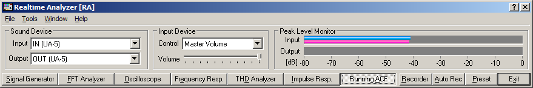

DSSF3 > RA > Running ACF > Measurement guide
Input device setting
Select the input device and the soundcard in the main window of RA. The Input device selection and volume control in RA is interlocked with the Windows recording control.
Check the Peak Level Monitor and adjust the input volume so that the peak level becomes between -10 and -5 dB. If the peak level reaches 0dB, the input signal might be distorted. See the operation guide to know more about volume setting.

DSSF3 > RA > Running ACF > Measurement guide